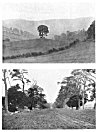
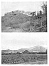

Sacred Texts Legends & Sagas England Index Previous Next
THE LEY-MEN.
The fact of the ley, with its highly skilled technical methods, being established, it must also be a fact that such work required skilled men, carefully trained. Men of knowledge they would be, and therefore men of power over the common people. And now comes surmise. Did they make their craft a mystery to others as ages rolled by. Were they a learned and priestly class, not admitted until completing

Click to enlarge
XIII. TREES.
{kind=link}
|
1. A One-tree Hill, Llanvihangel-nant-Melan. 2. Scotch-Fir (or Scots Pine) Avenue, Monnington (See Plate VII.). |

Click to enlarge
PLATE XIV. CAMPS.
{kind=link}
|
1. One of the Four Mounds, Sutton Walls. 2. Herefordshire Beacon. |
a long training--as Cæsar describes the Druids. Or did they--as Diodorus and Strabo says of Druids--become also bards and soothsayers. Did they, as the ley decayed, degenerate into the witches of the middle ages. Folk-lore provides the witches with the power of riding through the air on a broomstick, the power of overlooking, that of the evil eye. They (in imagination) flew over the Broomy Hills and the Brom-leys. It may be that the ancient sighting methods were condemned as sorcery by the early Christian missionaries.
Were they the laity or lay-men of Beowulf?
In later days our first English poet was one Layamon, and in his time were men called Ley-cester, Leye, and Ley-land.
In the Oxford Dictionary is given the obsolete word cole as meaning in the 16th century a false magician, a juggler, and cole-prophet (or cold-prophet) with a similar meaning, and there is a cole-staff or cowl-staff also mentioned, which, although then meaning a carrying stick, was--I surmise--originally the working sighting staff of the cole-man, who was the magician of the ley. The word still survives in colporter, a walking seller of books, who carries his wares slung over his shoulder on a stick.
We have in our district Coldman's Hill, Coldstone Common, Coles Tump (Orcop), and Coles Mountain (Presteign). In other parts of England are Coley, Colbury, Colebatch, Colestock, Coleshill, Coleford, Coleham, Colchester, and Coleridge, which last has an alternate name Coldridge, confirming other instances of the intrusion of the d. I surmise Cold Harbour (Kentchurch) to have been Cole Harbour.
Colmanswell in Ireland possesses to-day a "sacred" well, and this name, together with our own ancient Colewelle in Herefordshire, now altered to Colwall, is probably nearer the original root meaning than is the case of the three Coldwells at Holmer, Kingston, and English Bicknor.
A Bishop's name Colman is mentioned in the Anglo-Saxon Chronicle, and Cole is also a common surname to-day.
There are other names for a ley-man indicated in the two Derbyshire place names, Totmans Low and Laidmans Low, the Low being a sighting mound.
![g'.г.Ail maiden ©uмонетი: ℞ubli© ძ'ommAin 🖼 ImageI by 'Art'hur R_AckHÅm' & All inclusive names to my Roots && me, me I.B.M.l. ასლაჼ კლდიაშვილი, А©ЛАჼ ©КЛიДиÅWвიЛи [1922], @novadays ი.ბ. АйбоЛит [Aibolem МЕЛОДИЯR₾ი მო'სი'კვÅჼ]](https://barionleg.github.io/db-sacred-texts.li/neu/ba_geo_f.png) |